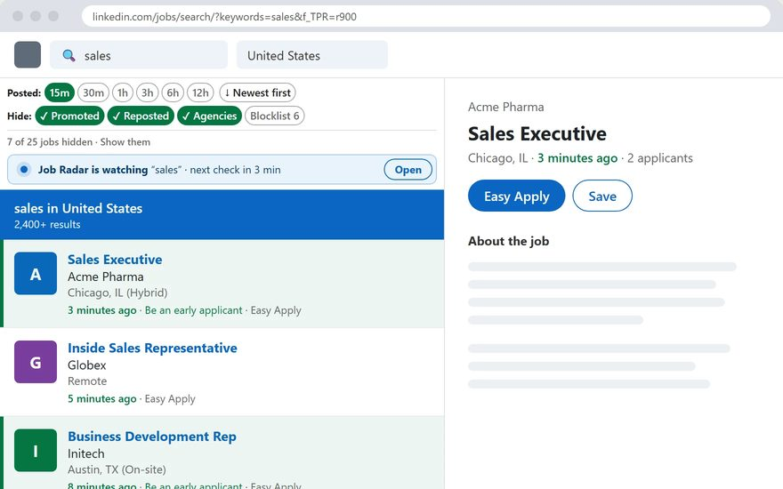

LinkedIn job search addresses carry settings such as f_TPR, f_AL and sortBy. Plenty of guides list them. We tested them in October and November 2026 with real searches, in a clean logged-out browser and in a logged-in account. Some work. Several do nothing.
Every parameter we tested
| Parameter | What it should do | Logged out | Logged in (AI search) |
|---|---|---|---|
keywords | Your search words | Works | Works |
location, geoId | The place. geoId is LinkedIn's number for it (103644278 is the United States) | Works | LinkedIn keeps geoId and drops the location text |
f_TPR | Date posted, in seconds: r3600 is 1 hour | Works, any number of seconds | Works, but anything under 24 hours is treated as 24 hours |
f_AL=true | Easy Apply jobs only | Works | Works |
f_EA=true | Under 10 applicants | Works | Works |
f_WT | Workplace type (we tested f_WT=2, remote) | No effect | LinkedIn turns it into its own filter and the results change |
sortBy=DD | Most recent first | No effect | No effect, removed from the address |
f_E | Experience level (we tested f_E=2) | No effect | No effect, removed from the address |
f_JT | Job type (we tested f_JT=C, contract) | No effect | No effect, removed from the address |
distance | Miles around the place | No effect | Stays in the address, results did not change |
Two more, not tested logged in: f_SB2 (salary) and f_JIYN did nothing logged out. f_C (company, uses company ID numbers) is offered by the logged-out page, and we did not test it.
f_TPR=r3600 as 24 hours, and no code sorts the list newest first. EarlyApply adds time buttons that hide older jobs, and a ★ Newest jobs list, right inside the page.
How we tested
- Logged out: a fresh Chrome with a clean profile. For
sortBy: 4 searches (sales, nurse, data analyst, software engineer), each with a 1-hour and a 24-hour window, with no sort,sortBy=DDandsortBy=R. 24 runs, the first 25 jobs each. The order was the same every time, and not newest first. - Logged in: one signed-in account, one search ("sales", United States). For each code we checked what stayed in the address after LinkedIn loaded, and whether the 24 jobs on the page changed.
- Limits: LinkedIn changes often, and it shows different jobs to different people. If a code works for you and not here, tell us.
Copy-paste links (logged out)
Open these in a private window. Change data%20analyst to your job title and United%20States to your place. A space is written %20.
Jobs posted in the last hour
Easy Apply, past 24 hours
Under 10 applicants, past 24 hours
More time values (15 minutes, 30 minutes, 3 hours and so on) are in the f_TPR code table.
Build your own link
Logged in, LinkedIn may replace this place with your own. Set the place after the page opens.
Works best in a private window (logged out). Logged in, LinkedIn treats anything shorter than 24 hours as 24 hours. This builder runs in your browser and sends nothing anywhere.
Good to know
- Logged in, the time codes lose their edge. LinkedIn's AI search treats
r3600as 24 hours. See how to get classic job search back. - No code sorts the list. Read the "posted X ago" line, or use the ★ Newest jobs button in EarlyApply.
- Promoted and reposted jobs still slip in. See how to remove promoted jobs and how to filter out reposted jobs.
- Not in the mobile app. The app has no address bar. Use a browser.
Skip the codes: use EarlyApply
EarlyApply is a free Chrome and Edge extension that works while you are logged in, right on the LinkedIn page.
- One-click buttons: 15m, 30m, 1h, 3h, 6h, 12h
- ★ Newest jobs: your search, newest first
- Hides promoted, reposted and old jobs
- Job Radar: a desktop alert the minute a new job is posted

Questions
What are LinkedIn job search URL parameters?
They are the settings after the question mark in a LinkedIn jobs address, for example f_TPR=r3600 for the last hour or f_AL=true for Easy Apply. You can type them in the address bar to set a filter that the menu does not offer, or to save a search as a bookmark.
Does sortBy=DD still sort LinkedIn jobs by most recent?
No. In October and November 2026 we tested it in a clean, logged-out browser (24 runs, 4 searches) and in a logged-in account. The order did not change. Logged in, LinkedIn removes it from the address.
How do I show only Easy Apply jobs with a URL?
Add f_AL=true to the search address. It works logged out and logged in.
How do I show only jobs with fewer than 10 applicants?
Add f_EA=true. LinkedIn shows it as the Under 10 applicants button. It works logged out and logged in, and it helps you apply early.
Why does f_WT not filter remote jobs when I am logged out?
The logged-out job list ignores it. Logged in, LinkedIn accepts it and turns it into its own filter, so it can still change your results. We tested f_WT=2 (remote).